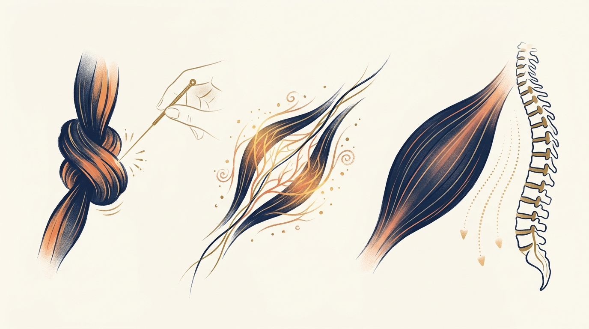
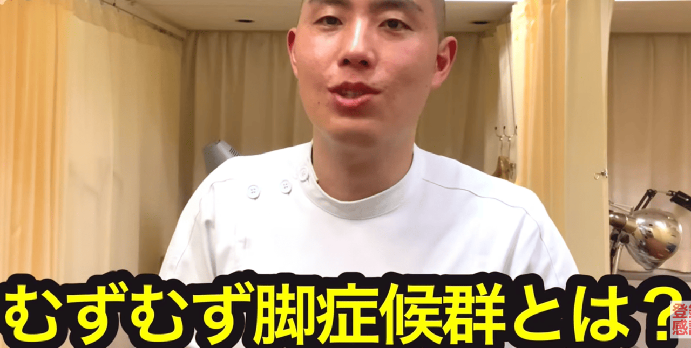
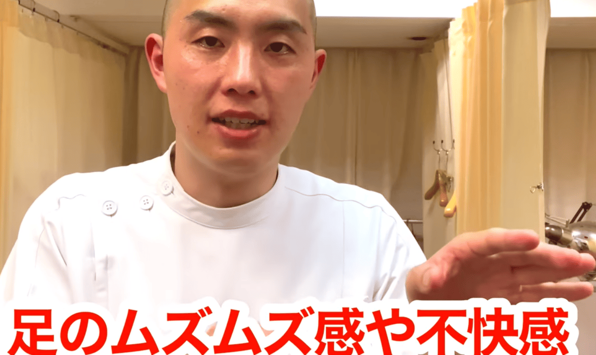
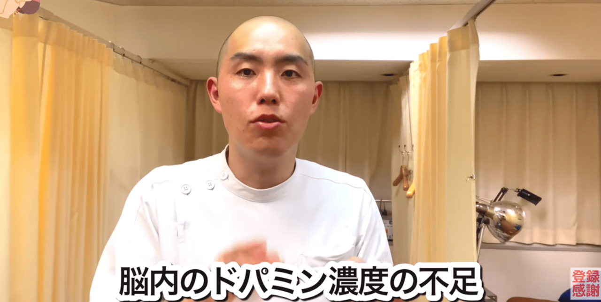
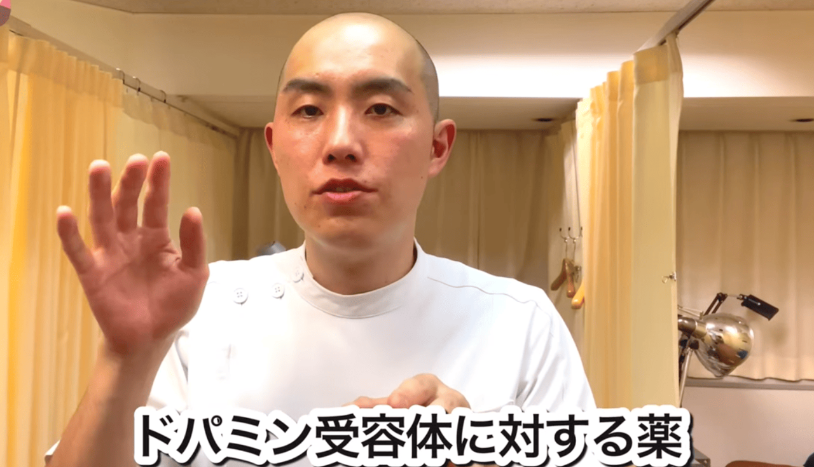
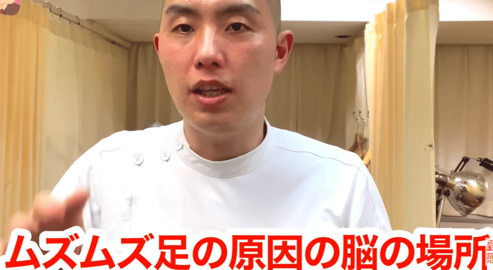
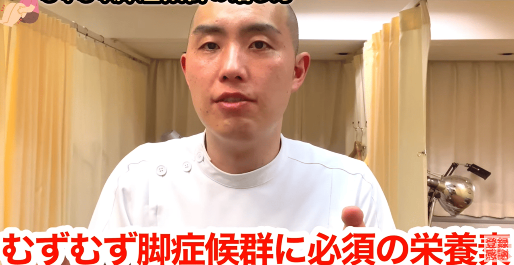

むずむず脚症候群の鍼灸
安静時や夕方〜夜間に脚の奥にむずむずした不快感が生じ、脚を動かさずにはいられなくなって不眠などを招く神経疾患です。
まず知っておきたい要点と改善の流れ
脳内の運動や感覚を調節する神経伝達物質「ドパミン」の機能低下が主な原因と考えられています。ドパミンの合成には鉄分が不可欠なため、鉄欠乏性貧血や妊娠後期、腎疾患、糖尿病、末梢神経障害、関節リウマチ、遺伝的素因、一部の向精神薬や抗ヒスタミン薬などが発症や悪化に関与します。女性は男性の約2倍多く、60歳以上では5％以上に見られる身近な症状です。（公式解説）
このようなお悩みはありませんか？
- ✓夕方から夜にかけて脚の奥がむずむず・ジリジリしてじっとしていられない
- ✓脚を動かしたり歩いたりすると一時的に不快感が和らぐ
- ✓皮膚のかゆみとは違い、かいても解消せず寝つきが悪い・夜中に目が覚める
- ✓睡眠中に足首が無意識にピクッと動く（周期性四肢運動）と言われたことがある
当院の施術アプローチ・改善の流れ
なぜ鍼灸で改善へ向かうのか？（作用機序の図解）
むずむず脚症候群に対する鍼灸は、末梢神経の微小循環改善と中枢性感作の鎮静機序を通じて、お体本来の回復力を引き出します。

過敏な皮膚への過剰刺激を避けつつ、神経の走行に沿った安全な部位と遠位穴を刺激します。
神経を圧迫する周囲筋の過緊張を緩め、神経線維の修復に必要な酸素と血流環境を整えます。
微細な刺激で過敏化した痛み伝達回路を鎮静し、ピリピリ感や放散痛の波を和らげます。
睡眠不足や自律神経の緊張も同時に整え、しびれ・神経痛による生活支障度を軽減します。
院長YouTube解説・関連動画
むずむず脚症候群は末端の不快感や痛みから特徴が付けられた慢性的な病気

むずむず脚症候群は、身体の末端の不快感や痛みから特徴が付けられた慢性的な病気です。
年齢を重ねるとムズムズして寝れない人はたくさんいます。むずむず脚症候群は当院でも多い病気です。レストレスレッグスシンドロームともいわれ、主に夜間に下肢に不快感やムズムズを感じることが特徴的な神経学的障害です。
症状は休息中に現れ、動かすことで一時的に緩和します。原因は明確には解明されていませんが、遺伝的要素、鉄分不足、脳内のドーパミン濃度の不足、腎臓病、妊娠、薬の副作用などが関与しているといわれています。
主な症状は下肢のムズムズ感や不快感です。症状は夜間に悪化する傾向にあり、休息中に症状が現れます。動かすことで一時的に症状が緩和されます。
改善方法は薬、鉄分補充、生活習慣の改善です。薬はドーパミン受容体に対する薬やコンパル酸、ベンゾジアゼピンなどの薬が処方されやすいです。
むずむず脚症候群の症状はむずむず、不快感

むずむず脚症候群という病気は一般的にあまり知名度がなく、知られていません。高齢者には、脚の皮膚がかゆくなる症状の起きる皮膚掻痒症という皮膚科の病気があります。
しかし、皮膚掻痒症で起こるかゆみは脚の表面の皮膚のかゆみです。このかゆみは、脚をかいたりすることによっておさまります。
むずむず脚症候群の場合、そのむずむずという病名にもあるように、脚の深い部分にむずむず、ジリジリなどの不快感が症状として現れます。脚をかいたとしても不快な症状がおさまることはありません。
このかゆみは夜眠る時に現れます。そのため、むずむず脚症候群で不眠障害に苦しんでいる人も多いです。このかゆみ症状は、足を動かすと一時的に無くなります。しかし、眠ろうとした時に再びむずむず、ジリジリの不快感が出てきてしまいます。眠りについた後も、むずむず脚症候群のもうひとつの症状である周期性四肢運動が現れます。
周期性四肢運動の症状は、寝ている間に20～30秒の間隔で足首をカクッカクッと蹴るようなけいれんです。この症状が起きることによって睡眠中に目覚めてしまい、眠れなくなってしまいます。
むずむず脚症候群で悩んでいる人の50～80%がこの周期性四肢運動をかゆみと合わせて発症しているといわれています。
不快な感覚：しばしばこの感覚を「むずむず感」、「くすぐったさ」、「痛み」、「痺れ」、「引きつり」などと表現します。この感覚は休息時に最も悪化し、特に座ったり横になったりしたときに感じられます。
動かす衝動： 不快な感覚は、脚や腕を動かす強い衝動を引き起こします。動きは、患者にとっては一時的に症状を軽減する役割を果たします。
夜間の症状の増加： 症状は、夕方や夜間に特に悪化します。これは就寝前やベッドでの休息時に特に顕著であり、結果として睡眠の質が大幅に低下します。
不眠： しばしば不眠症を引き起こし、これは疲労、集中力の欠如、日中の眠気、抑うつなど、さまざまな他の健康問題を引き起こす可能性があります。
むずむず脚症候群はドーパミンと関係している

むずむず脚症候群は白人に多く約5～15%で、アジア人には約2～5%前後といわれています。ただし、60歳以上になると約5%以上いるといわれており高齢になるほど多くなります。当院でも非常に来院の多い病気です。
むずむず脚症候群の男女比は1：2で、女性が男性の2倍です。むずむず脚症候群になるメカニズムはまだ不明です。
しかし、最近、脳内で神経細胞の間で信号のやりとりをするのに重要な神経伝達物質のドーパミンの作動性神経細胞の機能低下と関係していることがわかりました。
ドーパミンは、人間が手や足を動かしたり、いろいろな運動をする際、機械の潤滑油のように円滑に進むための働きをします。
ドーパミン異常： ドーパミンは、脳内で神経細胞間の通信を助ける神経伝達物質です。ドーパミンのバランスが崩れると、脳が体の動きを正常に制御できなくなり、症状を引き起こす可能性があります。
遺伝的要因： 家族間で発生する傾向があり、特に症状が若年に現れる場合は、遺伝的要因が強く関与していると考えられています。
鉄欠乏： 鉄の不足は、ドーパミンの生産に影響を与え、症状を引き起こす可能性があります。
慢性的な病気： 一部の慢性的な病気、例えば腎臓病、糖尿病、末梢神経症、関節リウマチなどはリスクを高める可能性があります。
妊娠： 妊娠は一時的に症状を引き起こす可能性があり、特に妊娠後期にそのリスクが高まります。しかし、出産後に症状は通常消えます。
薬物： 特定の薬物は症状を誘発または悪化させる可能性があります。これには抗精神病薬、抗うつ薬、一部の抗ヒスタミン薬、カフェインなどが含まれます。
むずむず脚症候群の改善法は生活習慣、マッサージ、薬

むずむず脚症候群の改善法は、生活習慣の改善とマッサージ、薬を使った方法が中心です。
生活習慣の改善で重要なことは、症状を悪化させる要因となるカフェインを避けることです。夕方以降はコーヒーや紅茶、日本茶は飲まないようにしてください。
深酒はしないことも大事です。筋肉の疲れが強いときは、十分なマッサージを行うかマッサージを受けてください。軽症であれば、これだけでも症状は改善します。
しかし、重症の場合は生活習慣の改善に加えて薬を使った改善方法を行います。
・自己管理とライフスタイルの変更
生活習慣の改善： 適度な運動、バランスの取れた食事、良い睡眠習慣の維持など、健康的な生活習慣を実践することが症状を管理するのに役立ちます。
カフェイン、アルコール、タバコを避ける： これらの物質は症状を悪化させる可能性があります。
ストレッチと運動： 定期的な適度な運動は症状を軽減する可能性があります。しかし、過度な運動は症状を悪化させる可能性もあります。
ドーパミン作動薬： ドーパミン作動薬は最も一般的に処方される薬で、中枢神経系のドーパミンレベルを増やすことで症状を軽減します。
α2δリガンド： ガバペンチン（ノイロチン）やプレガバリン（リリカ）などは、神経系における異常な興奮を抑制し、症状を軽減する可能性があります。
ベンゾジアゼピン： クロナゼパム（リボトリル）やテマゼパム（レスタリル）などのベンゾジアゼピンは、症状が強い場合や、他の方法が効果的でない場合に用いられます。
鉄補給： RLSは時折、鉄の不足と関連しています。鉄補給は、特に血液を調べた時に鉄の低下が確認された場合に有用であり得ます。
・非薬物
CBT： CBTは、病気に対する理解を深め、不適切な行動や思考パターンを変えることで、症状を軽減するのに役立つことがあります。
リラクゼーション： ヨガ、マインドフルネス瞑想、深呼吸、進行性筋肉リラクゼーションなどのリラクゼーション技術は、ストレスを減らし、睡眠を改善し、症状を軽減するのに役立つことがあります。
温熱/冷却： 温湿布や冷湿布を使用することで、一時的な症状の緩和が得られる場合があります。

むずむず脚症候群の回復の機序は、脳内のドーパミン濃度を適切な状態に維持して神経伝達のバランスを整えることで症状が軽減されることです。
ドーパミンは脳内のいくつかの場所で生成され、分泌されます。
主な分泌場所は2つです。
中脳に位置し運動制御に関与します。
ここで生成されたドーパミンは大脳基底核に送られて運動機能の調節に役立ちます。
②腹側被蓋野
中脳に位置して情報集計や快楽、モチベーションに関与します。ここで生成されたドーパミンは前頭前皮質や側坐核に送られ、報酬系や快楽、モチベーションの維持に関与します。
むずむず脚症候群の症状は主に黒質で生成されるドーパミン不足や神経伝達物質のバランスの乱れによって引き起こされると報告されています。そのため、ドーパミン濃度を適切に維持し神経伝達のバランスを整えることが症状の改善につながります。
むずむず脚症候群とドーパミンの関連性についてはいくつかの研究が存在します。2011年に行われたエアール・マッケイによる論文ではドーパミンに対する薬の使用によってむずむず脚症候群の症状が緩和されることが報告されています。
また、この研究ではドーパミン濃度の低下やドーパミン状態の機能不全が症状に関与していることも報告されています。
むずむず脚症候群は日常生活に大きな影響に与える症状ですが、適切な改善方法やライフスタイルの改善を行うことで症状の緩和が可能です。きちんと症状を理解して適切なサポートを受けることが重要なのです。

むずむず脚症候群の症状を緩和するために摂取するべき栄養素は、鉄分、ビタミンB、マグネシウムです。これらの栄養素を摂取することで症状が緩和されます。
鉄は酸素輸送に関与します。鉄分不足はドーパミン生成にも影響を与えるためむずむず脚症候群には必須の栄養素です。
ビタミンB群は神経機能の正常化に役立ちます。特にビタミンB6とB12が神経伝達物質の生成に関与します。
マグネシウムは筋肉や神経のリラックス効果があり、神経伝達のバランスを整えることが期待できます。
むずむず脚症候群の改善には、規則正しい生活を意識して心がけること、ウォーキングなどの軽い運動をすることが必要です。
さらに、夜寝る前にストレッチやマッサージなどをすることで筋肉をほぐすことも改善に効果を発揮します。自分で生活習慣を見直しても改善に取り組んでもあまり症状が改善しない場合、薬を服用して改善を試みることになります。
現在、日本ではむずむず脚症候群の症状を和らげる薬はいくつかあります。生活習慣の改善や軽い運動、ストレッチやマッサージなどで効果が見られない場合でも、これらの薬の服用によってむずむず脚症候群の症状の改善は十分に期待できます。
むずむず脚症候群は日常生活に大きな影響を与える症状ですが、きちんと理解して対処することで症状を和らげることが可能な病気です。
神経のお悩みのツボ図解とセルフケア
実際の施術ではお一人おひとりの体質・症状に合わせて選穴しますが、末梢神経障害・神経障害性疼痛（帯状疱疹後神経痛・手根管・CIPN等）の臨床でよく用いられる代表的なツボの目安です。

📌 代表的なツボの詳細一覧表を開く（6穴） ▼
| ツボ名 | 位置の目安 | 主な狙い | セルフケアの注意点 |
|---|---|---|---|
| 合谷（ごうこく） | 手の甲、親指と人差し指の骨が交わる手前 | 上肢のしびれ・疼痛のゲートコントロール | 妊娠中の強刺激は避ける |
| 陽陵泉（ようりょうせん） | 膝外側下方、腓骨頭の前下のくぼみ | 筋会。下肢のしびれ・筋けいれん・緊張緩和 | 総腓骨神経近接のため強押し禁止 |
| 太衝（たいしょう） | 足の甲、親指と人差し指の骨が交わる手前 | 足部のしびれ・自律神経性の疼痛増悪緩和 | 妊娠中は強刺激回避。知覚鈍麻時は熱傷注意 |
| 風池（ふうち） | 後頭部の生え際、僧帽筋外側のくぼみ | 後頭部〜頸部神経の過敏鎮静・循環改善 | 頸動脈側へずらさず優しい圧で |
| 翳風（えいふう） | 耳たぶの後ろ、乳様突起と下顎骨の間のくぼみ | 顔面・頭頸部神経周囲の微小循環ケア | 神経・血管が集中するため強圧厳禁 |
| 百会（ひゃくえ） | 両耳上端を結ぶ線と正中線の交点 | 中枢性の疼痛過敏・睡眠の質改善 | 高血圧発作時・頭痛増悪時は中止 |
国際査読論文の科学的エビデンス
国際的な医学データベース（PubMed・Cochrane等）で報告されている末梢神経障害・神経障害性疼痛（帯状疱疹後神経痛・手根管・CIPN等）領域の代表的な査読済み鍼灸研究をまとめています（標準治療との併用や研究上の限界を含めて正確に掲載）。
📚 査読論文データ・PubMed出典リンクを開く（4件） ▼
| 年・研究デザイン | 対象・規模 | 主な結果 | 限界・出典 |
|---|---|---|---|
| 2024年 メタ解析 | 化学療法誘発性末梢神経障害（CIPN）21研究（n=2,121） | 疼痛強度（SMD -0.66, p=0.002）、QOL（p=0.01）、正中神経MCV・脛骨/腓腹神経SCVが有意改善。 | 介入・対照設定に臨床的異質性あり。 Front Neurol (PMID: 39555482) |
| 2019年 メタ解析 | 帯状疱疹後神経痛（PHN）系統的レビュー | 疼痛強度を有意に軽減（SMD -1.78, GRADE中等度）、不安・QOLも改善。 | 小規模研究が多く大規模高品質RCTでの追試が必要。 J Pain Res (PMID: 31410050) |
| 2018年 Cochraneレビュー | 手根管症候群 12試験（n=869） | シャム・装具併用比較では明確な差なし（低確実性）。重篤な有害事象なし。 | 全試験でバイアスリスク懸念（薬物・装具等の補完）。 Cochrane (PMID: 30521680) |
| 2023年 メタ解析 | 神経障害性疼痛全般 8 RCTs統合（n=338） | 全体解析で疼痛強度を有意改善（SMD -0.59, P=0.001）、シャム比較も優位（P=0.01）。 | GRADE確実性は非常に低く薬物療法の補助として解釈。 Front Neurol (PMID: 36698895) |
参考文献・出典
- 銀座そうぜん鍼灸院「むずむず脚症候群の公式解説ページ」
- 2024年 メタ解析（化学療法誘発性末梢神経障害（CIPN）21研究（n=2,121））— Front Neurol (PMID: 39555482)
- 2019年 メタ解析（帯状疱疹後神経痛（PHN）系統的レビュー）— J Pain Res (PMID: 31410050)
- 2018年 Cochraneレビュー（手根管症候群 12試験（n=869））— Cochrane (PMID: 30521680)
- 2023年 メタ解析（神経障害性疼痛全般 8 RCTs統合（n=338））— Front Neurol (PMID: 36698895)
よくある質問（FAQ）
Q. 自宅でできるセルフケアやおすすめのツボはありますか？▼
Q. 食事で意識したほうがよい栄養素はありますか？▼
あわせて読まれる関連疾患（神経のお悩み）
帯状疱疹の皮膚症状治癒後も3か月以上続く神経痛（PHN）です。医療機関の治療と併用し、血流・自律神経・生活の工夫で痛みの軽減を支えます。
顔面神経への血管圧迫などで顔の片側が無意識に痙攣する疾患です。専門医の診断を前提に、筋緊張緩和・自律神経調整・ツボケアで支えます。
手足の動脈が炎症・血栓で詰まる指定難病（閉塞性血栓血管炎）です。専門医の診療と完全禁煙を最優先に、安定期の血流と自律神経を支えます。
けがや手術後に損傷の程度を超える激しい痛みと自律神経症状が続く疾患（CRPS）です。専門医の治療・リハビリと並行し、低刺激で補完ケアします。
両足にゆっくりとつっぱり（痙縮）と筋力低下が進む指定難病（HSP）です。専門医の診療・リハビリを最優先に、安定期の筋緊張を穏やかにケアします。
神経の損傷や機能異常で起こる慢性の強い痛みです。医療機関での原因治療と並行し、深層筋・自律神経・ツボケアで痛みの悪循環を和らげます。
おひとりで悩まず、まずはご相談ください
銀座本院・川口・大宮・横浜・博多・田無の各院でご予約を承っております。